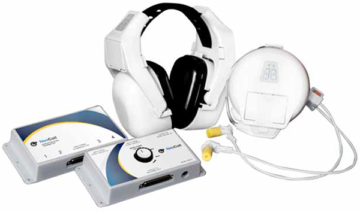

- 00000018WIA30068030GYZ
- id_123742081.5
- Oct 11, 2021 7:47:38 PM
NeoCoil Sentinel G1 wireless Audio System
Sentinel™ G1 Wireless Audio System

Vendor Documentation:
-
NeoCoil Part# NC070IFU: Instructions for Use (eIFU)
-
NeoCoil Part# NC00S027: Sentinel G1 Wireless Audio System Installation Instructions (Paper Copy)
NoteBoth these instructions ship in the box with the wireless audio system.
Wireless Audio System FRUs:
The following are the GE Part numbers that will be stocked in GPRS.
| GE P/N | Neocoil P/N | Description |
|---|---|---|
| 5789394-F1 | NC069001 | FRU, TECHNOLOGIST CONSOLE INTERFACE |
| 5789394-F2 | NC071000 | FRU, WIRELESS PATIENT HEADPHONES |
| 5789394-F3 | NC075000 | FRU, WIRELESS AUDIO INTERFACE |
| 5789394-F4 | NC079002 | FRU, PENETRATION PANEL TRANSMITTER |
| 5789394-F5 | NC071002 | KIT, EAR CUSHION REPLACEMENT |
| 5789394-F6 | NC075401 | AIRTUBE ASSEMBLY |
| 5789394-F7 | NC075406 | EARBUD ASSEMBLY (QTY 250) |
| 5789394-F8 | NC075407 | EARBUD ASSEMBLY (QTY 500) |
| 5789394-F9 | NC082001 | Battery Pack |
| 5789394-F10 | NC082000 | Battery Charger |
Note
In case of any unavailability/conflicts, please contact NeoCoil